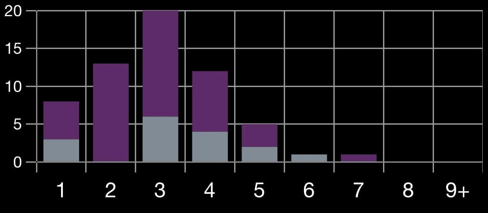

O que é um deck
Um deck é um baralho de cartas que você monta antes do jogo para jogar. Esse baralho tem regras de construção e define qual será a tática que você vai usar durante todo o seu jogo (em campeonatos serão vários jogos).
No Lorcana o modo de jogo padrão é o Core Constructed, um modo de jogo construído (que você precisa ter seu deck montado antes, com cartas que você compra, troca ou adquire através de boosters) em que as regras de construção de deck são, mínimo de 60 cartas, somente cartas impressas na coleção 5 ou superior, não pode ter cartas banidas (cartas que foram definidas como ilegais no jogo, geralmente por ser forte demais) e no máximo duas cores de tinta.
O core é um formato rotativo, ou seja, conforme novas coleções lançam as mais antigas vão deixando de ser válidas. E com um detalhe importante: cartas impressas em coleções não válidas ainda podem ser utilizadas, desde que tenha uma versão dela impressa em qualquer coleção que seja válida no core.
É importante deixar claro logo aqui no início também que um deck, na maioria das vezes, terá o mínimo de cartas permitidas, já que queremos maximizar nossas chances de comprar uma carta específica precisamos garantir que o baralho tenha menos cartas, aumentando nossas chances de ter o que precisamos para vencer.
Outros formatos
Lorcana tem outros formatos de jogo, o core, já dito antes, o infinity, que tem praticamente as mesmas regras do core mas que valem todas as coleções do jogo, os formatos selados onde você não precisa ter um deck, mas abre boosters e monta seu deck com as cartas que você retirou dali (existem formatos diferentes dentro dessa categoria de selado, mas não serão abordados aqui), starters, um formato onde você joga com o deck inicial, sem alterá-lo, o multiplayer, onde várias pessoas podem jogar umas contra as outras e citarei aqui também o poorcana, um formato não-oficial, que é muito parecido com o infinity, mas só valem cartas comuns e incomuns.
Existem muitos outros formatos, assim como você pode criar seu próprio formato, desde que todos que forem jogar concordem com as regras do jogo.
Montando um deck
Para montar um deck temos algumas dicas simples, que valem para todos os formatos, já que a estrutura básica do jogo é a mesma, independentemente do formato.
Um deck simples precisa ter basicamente três coisas: compra de cartas, remoções de cartas dos oponentes e uma forma de ganhar. Esses itens não são obrigatórios (você perceberá que na verdade nada do que será dito aqui é obrigatório, já que cada deck pode ter uma particularidade que faz algo ser desnecessário). Vamos abordar cada um desses itens abaixo:
* Draw (comprar cartas): nós começamos o jogo com 7 cartas na mão e compramos 1 carta por turno. Durante cada turno geralmente gastamos 2 cartas, 1 carta para a tinta e outra sendo jogada. Isso faz com que tenhamos 7 turnos (se “gastarmos” 2 cartas todo turno) de jogo, após isso começamos a jogar somente as cartas que compramos (ou precisamos colocar a carta que compramos na tinta). Geralmente esse limiar não é o suficiente para ganhar o jogo, portanto os decks tem formas de lidar com isso, seja comprando mais do que 1 carta por turno, deixando de colocar cartas na tinta ou tendo cartas que se repõem ou conseguem fazer várias coisas ao mesmo tempo.
* Remoção de cartas: em muitos jogos o seu oponente irá começar melhor do que você. Em outros casos a própria tática do deck é impedir o oponente de jogar, mas em todos os casos é importante ter cartas que impeçam o oponente de consolidar o plano dele, já que nem sempre podemos garantir que nosso plano irá funcionar antes do plano do oponente.
* Forma de ganhar: Normalmente o objetivo do deck é ganhar um jogo. Apesar de termos decks temáticos, casuais, com jogadores que não se importam necessariamente em vencer, seria chato jogar um jogo onde o oponente não quer ganhar, ou até mesmo não tem como ganhar, por isso essa regra é a mais importante dessa lista. Existem decks que ignoram o oponente e só seguem o seu plano, sem remoções, também existem decks que não compram cartas, mas é quase impossível se deparar com um deck sem meios de vitória. Seja questando, fazendo o oponente ficar sem cartas no deck ou ganhando lore através de ações, tudo isso é uma forma de vitória e pelo menos alguma delas deve estar presente no deck.
A quantidade de cartas de cada uma dessas categorias é muito subjetiva para falar números exatos, mas das 60 cartas que teremos no deck é importante que tenhamos pelo menos 4 cartas de cada uma dessas categorias (você perceberá que na verdade todas as cartas do jogo se encaixa em alguma dessas categorias).
Curva de tinta
No jogo podemos colocar uma carta na área de tinta por turno, o que significa que normalmente teremos 1 tinta a mais por turno, ou seja, turno 1 teremos 1 tinta, turno 2 teremos 2 tintas e assim por diante. Caso tenhamos muitas cartas de custo alto (cartas que custem 5 ou 6 tintas por exemplo) ficaremos sem fazer nada nos primeiros turnos, o que significa dar um tempo precioso para o oponente para que ele tenha mais recursos, se prepare para remover suas ameaças ou até mesmo ganhe o jogo. O contrário também é um problema, se tivermos somente cartas de custo baixo (1 ou 2) teremos o que fazer nos turnos iniciais, mas após alguns turnos nossas jogadas serão menos fortes e perceberemos que o oponente irá começar a ter jogadas que se sobressaem as nossas, provavelmente o levando a vitória. Por isso temos a teoria de curva de tinta. Aqui é importante termos uma curva nos custos das cartas, que vão gradativamente aumentando e ao chegar em determinado custo começam a diminuir a quantidade até chegar em 0.

Acima temos um exemplo de curva de tinta. Podemos perceber que temos algo em torno de 8 cartas de custo 1, que aumenta para 13 cartas no custo 2, chegando ao seu ápice de 20 cartas no custo 3 e logo em seguida diminuindo para menores quantidades em custos elevados.
Essa curva nos ajuda a ter cartas de custo 1 para jogar no turno 1, cartas de custo 2 para jogar no turno 2 e assim por diante. Muitas vezes após o turno 7 ou 8 deixaremos de ter cartas equivalentes a nossa quantidade de tinta, mas podemos fazer várias jogadas no mesmo turno, aumentando nossas respostas e deixando nossa mesa ainda mais forte.
A curva de tinta é provavelmente a parte mais frágil da construção de deck, de várias formas diferentes. Primeiro que é uma parte que muitos não prestam atenção, portanto é um erro comum de quem está começando a construir decks, também é algo que normalmente precisa ser definido junto a estratégia do deck, pois essa curva de tinta “comum” que temos acima é um exemplo base, muito utilizado por decks midrange, que querem tirar máximo proveito de suas tintas, mas não é a realidade de outros arquétipos como aggro ou control. Nesses decks é muito comum ter mais cartas de custo baixo (para o aggro, já que ele não quer chegar no fim do jogo e quer ganhar antes mesmo de ter 5 tintas) ou mais cartas de custo alto (geralmente o control prefere ter cartas de custo alto, ficando sem muitas cartas no início do jogo mas ganhando vantagem do meio para o final do jogo). Por ser uma “regra” difícil para iniciantes e não necessariamente aplicável para decks mais competitivos digo que é um ponto frágil na construção de decks. O importante é sempre estar atento ao que irá fazer com suas tintas em cada turno e como cada carta será útil em cada momento do jogo.
Inkable (tintável ou não tintável)
O Lorcana tem uma peculiaridade que é transformar cartas em tinta. Em outros TCG é comum que tenham cartas específicas de recurso (seja fora do deck ou dentro dele), mas aqui as próprias cartas são recursos. Recentemente um verbo novo foi criado no inglês para determinar as cartas que podem ou que serão tinta. O verbo “to ink” tomou forma, podendo ser traduzido como “tintar”. Uma carta tintável é aquela com uma borda dourada em volta do seu custo na parte superior esquerda. É importante termos cartas tintáveis no deck para garantir que não fiquemos sem tinta ou que precisemos tintar algo que não queríamos.
Normalmente um deck pode ter no máximo 30% de cartas não tintáveis. Esse é um valor bem genérico e não pode ser tratado como ideal. Cada estratégia e cada tipo de deck tem um valor bom para isso.
Uma carta ser não tintável significa que ela tem uma propriedade a menos do que as outras. Essa característica é uma desvantagem que dão para a carta por ela ser forte demais ou ter muita vantagem contra casos específicos. Portanto ter somente cartas tintáveis no seu deck pode significar que ele está fraco demais. Precisamos ter um equilíbrio entre cartas tintáveis e não tintáveis e cada deck faz isso de uma forma diferente. Eu diria que para um deck de 60 cartas o limite máximo imaginável de não tintáveis é 20 (esse é o limite para decks aggro, com muitas cartas de custo baixo e que quer ganhar logo no início do jogo), mas para decks midrange (que é o que um deck inicial mais se assemelha) o limite deve ser 12. Para decks controle, com cartas de custo alto o limite está provavelmente próximo a 8.
Não existe um valor mínimo. Como disse anteriormente, é provável que um deck formado apenas de cartas tintáveis seja muito fraco, mas é improvável que você escolha 60 cartas para um deck e nenhuma delas seja não tintável. É muito mais comum que o deck fique com uma quantidade exagerada de não tintáveis, fazendo com que você precise alterá-lo para um valor aceitável.
Estratégia principal
Aqui entra o “como ganhar”! O que fazer para ganhar o jogo? Essa é a questão principal do deck e provavelmente a primeira e mais fácil de ser respondida. Você quer ganhar rápido antes do seu oponente ter chances? Você quer controlar o jogo, impedir seu oponente de vencer e só então começar a jogar cartas fortes que ganharão? Você quer ganhar através da interação de cartas específicas que vão simplesmente te dar a vitória rapidamente? Essas são formas comuns de ganhar e que determinam o arquétipo do seu deck.
Desde que o TCG foi criado existem teorias sobre criação de decks, arquétipos e categorias de cada um deles. O básico são decks aggro (agressivos que ganham lore rápido e acabam o jogo), combo (decks que ganham através da interação de 2 ou mais cartas de alguma forma, levando a vitória) e o control (decks que impedem o oponente de jogar e ganham através de cartas de custo alto e difíceis de serem removidas, geralmente estendendo o jogo). Esses decks se comportam numa espécie de pedra, papel e tesoura, onde decks aggro ganham de control, que ganha de combo, que ganham de aggro. Essa não é uma regra. Nem sempre acontece assim, mas geralmente é assim que cada deck tem vantagem em suas partidas. Perceba que não citei midrange, apesar de ter falado dele até então, assim como não citei combo anteriormente, eles são um caso à parte no Lorcana, vamos falar disso.
O combo dentro do universo de TCG não é somente a interação ou sinergia, é um tipo de reação que acontece entre 2 ou mais cartas, que desencadeiam uma vitória. Portanto quando alguém fala “combo” ou “combei” ela está falando que ganha o jogo com essa ação. Isso é algo raro no Lorcana, poucos decks conseguem ganhar com uma interação entre cartas (e quando digo isso é sair de 0 lore para 20 por exemplo), no competitivo isso é praticamente inexistente. Por isso podemos deixar de citar o combo, já que ele é um arquétipo ainda muito vago e pouco visto no jogo.
Por outro lado o midrange é um tipo de deck que tem em todos os TCG e se fez presente no Lorcana desde sempre. Aqui queremos controlar o aggro e ser rápidos contra o controle. Queremos jogar cartas de custo 2 no turno 2, custo 3 no turno 3 e assim por diante, esse deck é normalmente um deck bom contra aggro, mas fraco contra control, o que o coloca numa posição igual ao combo em outros TCG, portanto boa parte dessa análise é feita olhando o midrange na posição do que o combo seria.
Cores de tinta
-
Amber - proteção e família - cartas mais protetoras, que querem mais personagens na mesa e cura. Mais próximo de decks aggro.
-
Amethyst - magia e mistério - cartas com muitos efeitos diferentes, muitas ações e habilidades complexas. Mais próximo de decks control.
-
Emerald - malandragem e traquitanas - cartas com evasão, que são difíceis de tirar e tentam ganhar rápido. Mais próximo de decks combo.
-
Ruby - força e emoção - cartas com maior poder de ataque, com poder destrutivo. Mais próximo de decks control.
-
Sapphire - inteligência e sabedoria - cartas que colocam mais tinta na mesa, cartas que procuram o que você precisa. Mais próximo de decks control.
-
Steel - resiliência e disciplina - cartas com maior ataque e força de vontade, cartas que causam dano a personagens. Mais próximos de decks control.
O META game
Se ainda não viu o artigo sobre META, recomendo que veja antes de ler essa parte. Ele cita muito do que é importante para fazer um deck e é a leitura principal.
Um deck não é forte por si só, ele é forte em comparação com outros. Ao fazermos um deck precisamos levar em consideração o que estamos enfrentando, não só ter cartas que impedem o oponente de jogar (ou cartas que conseguem praticamente ganhar um jogo contra um tipo específico de oponente) mas também saber que se vamos escolher um deck aggro para um campeonato que tem somente midranges é provável que iremos ficar numa posição ruim.
Essa leitura do meta é muito importante, ainda mais do meta local, que é onde o seu deck irá jogar. Para isso lembre-se das vantagens e desvantagens de cada deck, tente achar um deck que tenha mais vantagens do que desvantagens no cenário em que você está.
E o mais importante: saiba que não existe um deck que vence sempre, mas sempre é possível melhorá-lo para aumentar suas chances de vitória.